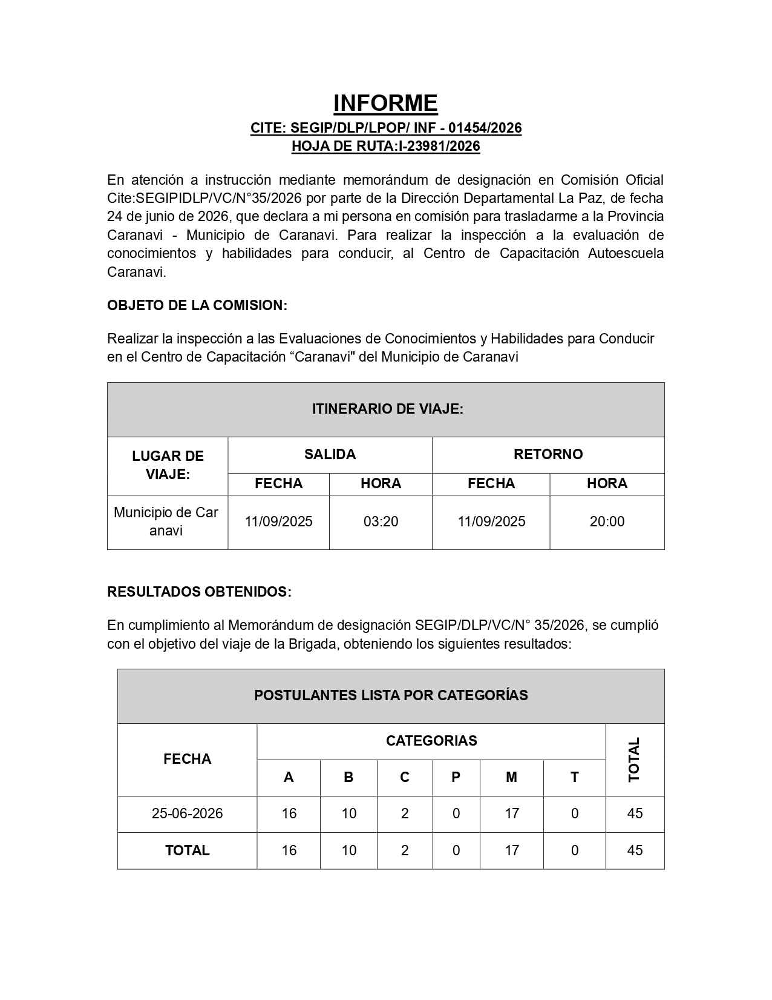

Caso: Informe de Evaluación de Conducción
Réplica de formato de informe administrativo, tablas de itinerario y categorías en base al resultado final
Replicar la estructura y el diseño visual de un informe técnico administrativo formal del SEGIP a partir de una plantilla base. En esta práctica no se dispone de un solucionario paso a paso detallado, por lo que el objetivo es analizar detenidamente la imagen del resultado esperado y aplicar tus destrezas de formateo en Microsoft Word: alineaciones de texto, jerarquía de fuentes, negritas, combinación de celdas en tablas y sombreados institucionales para lograr un acabado idéntico.
Material de Trabajo
Descarga la plantilla base en formato Word para iniciar el ejercicio:
Texto Contenido del Documento
El texto base incluido en la plantilla tiene la siguiente estructura y datos:
Pautas para la Réplica
Presta especial atención a los siguientes elementos para que tu documento sea idéntico a la solución:
- Jerarquía tipográfica: Aplica una fuente limpia (como Arial o Calibri). Resalta las secciones principales ("INFORME", "OBJETO DE LA COMISION", "ITINERARIO DE VIAJE", "RESULTADOS OBTENIDOS", "POSTULANTES LISTA POR CATEGORÍAS") con negrita y un tamaño de letra adecuado.
- Formato Administrativo: Alinea de forma justificada los párrafos de cuerpo e introduce sangrías y espaciados adecuados para simular un informe de carácter gubernamental.
- Diseño de la Tabla 1 (Itinerario): Modifica y estructura la tabla de itinerario combinando adecuadamente las celdas de las cabeceras (SALIDA y RETORNO) y los datos de fechas y horas para que queden alineados de forma simétrica.
- Diseño de la Tabla 2 (Postulantes por Categoría): Crea o ajusta la cuadrícula de la tabla para organizar los números correspondientes a cada categoría de conducción (A, B, C, P, M, T) junto con sus totales respectivos, aplicando sombreados de fondo institucionales.
- Alineación en tablas: Asegúrate de que las cabeceras y los datos numéricos estén centrados horizontal y verticalmente dentro de sus celdas, y que los textos descriptivos estén alineados a la izquierda.
Guarda el archivo finalizado como P07-Informe-Evaluacion-TuNombre.docx y compáralo minuciosamente con el resultado esperado.
Resultado Esperado
El documento finalizado debe lucir idéntico a la siguiente imagen:
